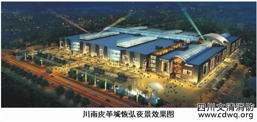
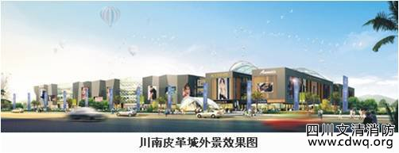
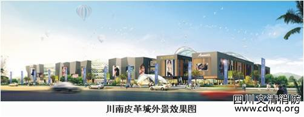

公司动态详情公司动态详情公司动态详情



川南皮革城在业态规划上,主场馆结构分四层,每层规划布局专项商业业态,一期开发面积为85000平米, 主场馆以皮革类为主体,集皮革服装、箱包鞋类、裘皮皮草为三大功能细分业态;二期建设面积为65000平米,以毛衫家纺为主题场馆,集时尚毛衫、四季家纺为二大主题业态的商业布局。商业步行街正对在规划中的恐龙广场,以连廊的形式与主场馆形成一体,商业规划上以主要配套商业为主,项日功能集购物、休開、餐饮、旅游、观光为一体。